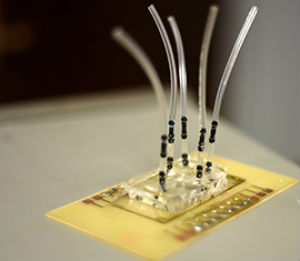

Tests for the presence of dangerous bacteria like salmonella in raw and processed foods can take anywhere from one to five days to produce results.
Researchers from MU and Lincoln University are working on a tool that would cut that time to seven hours or less.

Rainout shelters help Missouri farmers learn how to manage drought
Lauren Polanski
In July 2002, a drought settled over Missouri that lasted 99 weeks and finally ended in May 2004.
Eight years later during the week of Aug. 21, Missouri suffered the most intense drought in its history. The dry spell affected 35.72 percent of land in the state, according to the U.S. Drought Monitor.
Weather stations are providing the latest technology to improve farm life
Lauren Polanski
A number of electronic tools have been developed in the last 20 years to help farmers and others closely monitor the weather.
Tracking the weather is critical to successful farm practices, but site-specific information is important to other businesses as well.